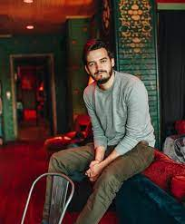
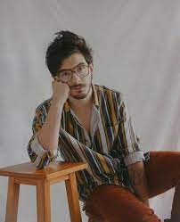
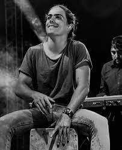
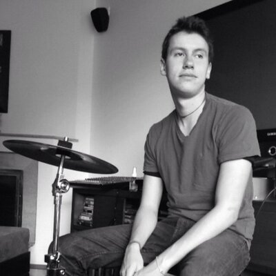

Contacto
Música
Integrantes
Inicio
Contacto
Música
Integrantes
Inicio
Juan Pablo Isaza Piñeros
Juan Pablo Isaza Piñeros (nació en 9 de Agosto de 1994, tiene 28 años) es uno de los vocalistas principales y guitarrista de Morat, también toca piano y ukelele. Estudia Administración de Empresas de la Universidad de los Andes, está estudiando una segunda carrera con énfasis musical y es cofundador de la exitosa casa de producción Mapache.
Juan Pablo Villamil Cortés
Juan Pablo Villamil Cortés (nació el 1 de diciembre de 1994, tiene 28 años) también es vocalista principal de Morat, toca el banjo, ukelele y guitarra. Es egresado de Música e Ingeniería Industrial de la Universidad de los Andes. En 2018 junto con un amigo lanzó su marca de ropa llamada GNRL studios.
Simón Vargas Morales
Simón Vargas Morales (nació el 24 de octubre de 1993, tiene 29 años) es vocalista y bajista de Morat, maneja los modulares. Estudio Historia en la Universidad de los Andes. Tiene un hermano ( Martín Vargas Morales) en la misma banda, Morat, Estudio Historia en la Universidad de los Andes. En el 2020 presentó su primer libro "A la orilla de la luz".
Martín Vargas Morales
Martín Vargas Morales (nació el 25 de septiembre de 1996) es cantante y baterista del grupo de Morat.Es egresado de Diseño Gráfico de la Universidad de los Andes. Forma parte de Morat junto a su hermano Simón Vargas. También es actor.
Alejandro Posada Carrasco
Alejandro Posada Carrasco era el baterista del grupo Morat, hasta que el 19 de dicimbre de 2016 hizo una publicación en redes sociales a través de la cuenta de la banda enunciando que abandonaba Morat para proteger cosas importantes para él, incluyendo sus intenciones de estudiar arquitectura
